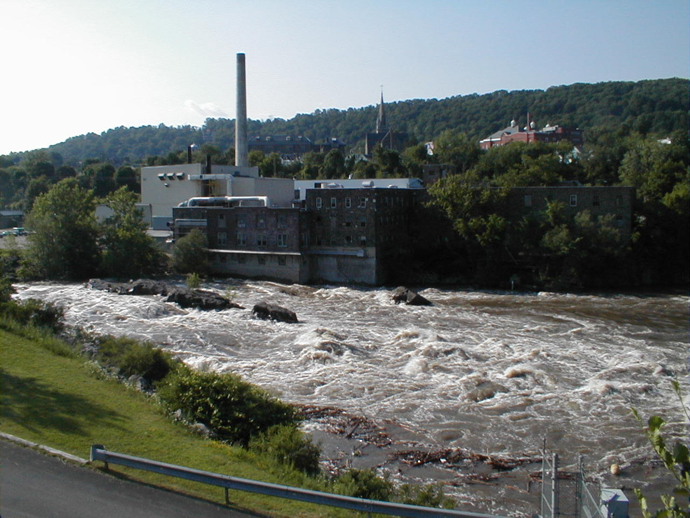

Day 44: June 25, Syracuse, NY to Little Falls, NYPrevious Day - Home - Next Day Photo of the DayThe rapids on the Mohawk River, from where Little Falls gets its name. Keegan's LogDay 44: June 25, Syracuse, NY to Little Falls, NY Mileage: 86.30 milesWeather: Warm and sunny Vertical Climb: 1300 feet Riding Time: 5:15 Today was a beautiful day, and a very nice ride too. We ate a quick breakfast at the hotel and took our bikes out into the bright sun. It was cool in the early morning, some elected to wear jackets leaving the hotel but they were soon removed. The ride out went through Syracuse, we got the quick tour of some of the more industrial parts of town on our way to the Canal Trail. The route yesterday and today traversed some pretty hilly terrain, but because we stayed in the same valley as the Barge Canal (originally the Erie Canal, see below) to avoid all of the hills. Occasionally we would catch a glimpse of the canal, usually near the old canal towns or when we neared a small valley. We did have a few good sized hills, but for the most part it was flat ride. The first sag was at Cross Lake, famous (sort of) because the smallest chapel in the world is on a little dock in the middle of the lake. The chapel was about the size of an outhouse, but with a steeple on top. We had forgotten our boats and didn't feel like a swim so we didn't get to take the tour, instead we killed some time at the sag. Tracy took a few 'brochure' photos, me and dad, me and Walter (the eldest rider), and a few group photos. We continued along the Canal Trail to a small river town at 58 miles, we stopped at a pizza restaurant for some mediocre square pizza. It looked a lot like Chef Boyardee's pizzas, lots of sauce with a little bit of cheese. We stopped at a Wal*Mart too, shopping for a cheap bike rack for the trip home, they had a usable one for $30. From there we cruised in to the hotel, we had a few long hills at the end but nothing too bad. I took a short nap as soon as I got in, even on a nice day 86 miles can be a little tiring. At 4:00 we got some snacks courtesy of the hotel, then at 4:30 the CrossRoads Pro Shop, a clothing store in a box, opened for business. Since today was the last chance for clothing, I bought a nice T-shirt. I headed to the Little Falls museum across the street, the displays were a little iffy but the woman working there was really nice, she pointed me toward the Canal just down the canal. I walked down the hill, crossed the Mohawk River (which the canal parallels through this valley), and then to the side of the Barge Canal. The Mohawk River drops a full 40 feet from the west end of Little Falls to the east end, the drop causes a lot of rapids and little waterfalls, hence the name of the town. In the 1790's a series of canals and locks was built to bypass this short section of the river. In the 1820's this canal was replaced by the 40' wide by 4' deep Erie Canal, which was expanded again around the turn of the century to the current 70' wide by 7' deep Barge Canal. I walked down the canal to lock #17, the lock that serves to connect the two canal heights on opposite sides of town. At 40.5', the lock has the highest water level difference of any lock in the world, and it truly was an amazing structure. Afterward I had to run back to make route rap, and then dinner in the hotel. Tomorrow should be a lot like today in terms of weather, only we will have less climbing and 15 miles less distance. We travel to Albany tomorrow, our last stop in New York, only 4 riding days still remain. It's hard to believe we're almost finished, it's been a wonderful trip, I know I'll miss a lot of the characters I've met along the way. That said, I do look forward to a life where I won't be riding my bike every day, some time to recover will be much appreciated. Phil's LogWe had a nice 84 mile ride. And arrived in Little Falls. This is a nearly ancient town, After my shower, i walked to the base of a big, old antenna tower, located conveniently at an old downtown hardware store. Interesting feeder system for an AM broadcast tower, but I'll spare all the details. They hen directed me through a tunnel to the Barge Canal. New York, I learned, was traversed by George Washington in its "natural state". He suggested that canals were needed to link the lakes and rivers. So in 1792 a bill was introduced to begin canal building. Te result was a loosely connected string of small canals. It proved inadequate. In 1817 the Erie Canal was begun. Remnants of that canal exist here, including the stone channel part of one lock. That first canal was twice upgraded, the third iteration being the Barge Canal. That is still operative, and carries some commercial craft and many pleasure boats. So I took a long walk along the path of the barge canal, and viewed the tallest lock at 40.5 feet. The Mohawk River runs between the canal and the town, and that is roaring due to recent rains, so much so that the entire system is shut down. I also climbed all over Moss Island, after getting a little lost. The town, as I mentioned, is very old. The banks of the river are home to a number of old factory buildings. These old brick buildings are built such that the foundation is a part of the river bank, no clearance at all. A few seem to be still functional, one as an apartment! Many are vacant, some in need of immediate attention if they are to be saved. They make good photographic subjects. I also thought that it would be fun sometime to fly the canal course in the Comanche, dropping into the larger towns if they have an airport to explore the local restorations. This area has a lot of industrial history. After dinner, I took a bunch of the bicyclists over the same tour. One rock was supposed to throw the shadow of a witch on the water, but it must take a Halloween imagination to see it. All through he walk I kept running the chorus of an old song I must have learned in 4th grade, New York State history.... Low bridge, everybody downLow bridge for we're goin' through a town And you'll always know your neighbor, you'll always know your pal If you've ever navigated on the Erie Canal. Remember, fellow King Street School chums?? |
{kind=link}